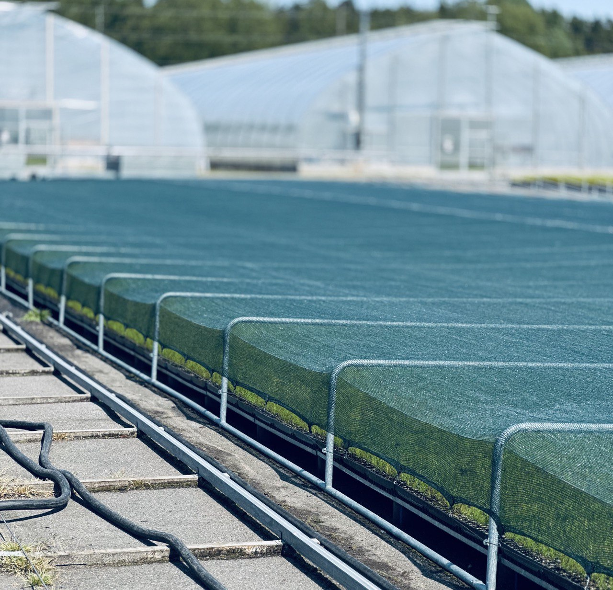
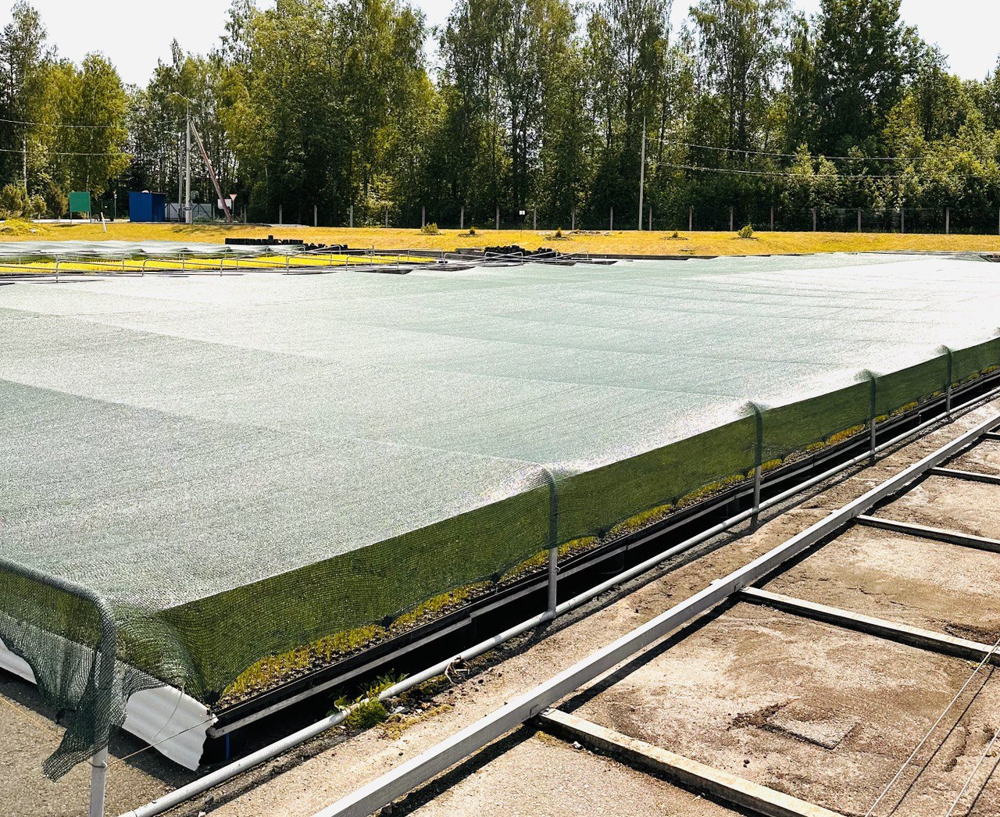
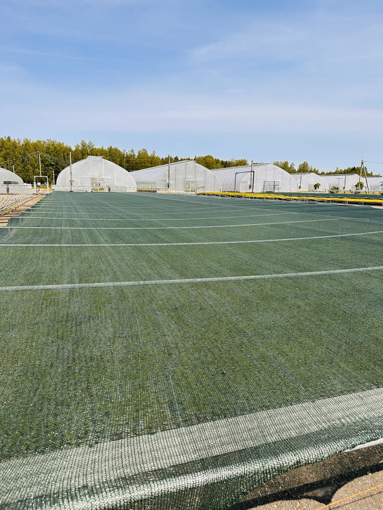
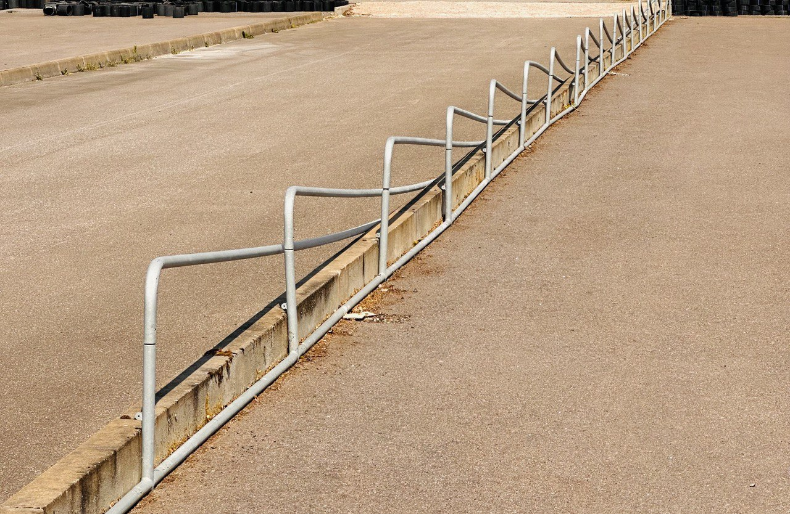
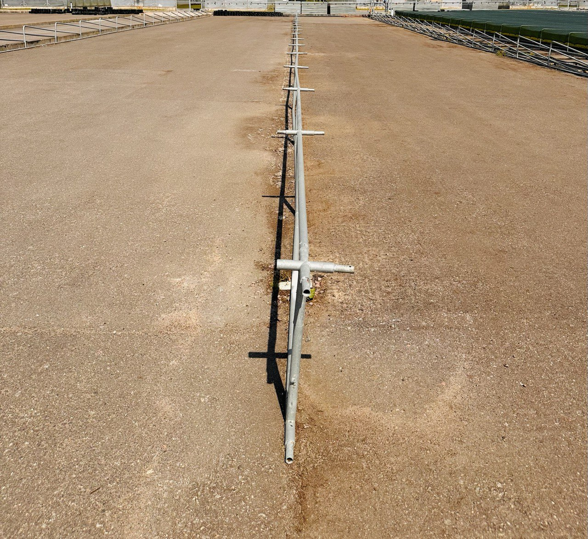

Системы затенения для теплиц
Зачем нужна система затенения?
Во время закаливания сеянцев, в зависимости от региона, мы часто сталкиваемся с активным и палящим солнцем, которое обжигает растения и не дает им нормально развиваться. Для этого мы имеем собственную, разработанную нашими инженерами систему затенения. Максимальная ширина площадки закаливания до 35 метров.
Особенности наших систем затенения
Защита от солнца
Эффективная защита растений от ожогов и пересыхания благодаря регулировке затенения.
Контроль температуры
Поддержание оптимальной температуры для роста и развития растений.
Адаптация к условиям
Закалка растений, обеспечивающая их устойчивость к изменяющимся погодным условиям.
Галерея систем затенения






Свяжитесь с нами
Хотите узнать больше о наших системах затенения? Свяжитесь с нами для получения подробной информации и индивидуального предложения.
Позвонить нам